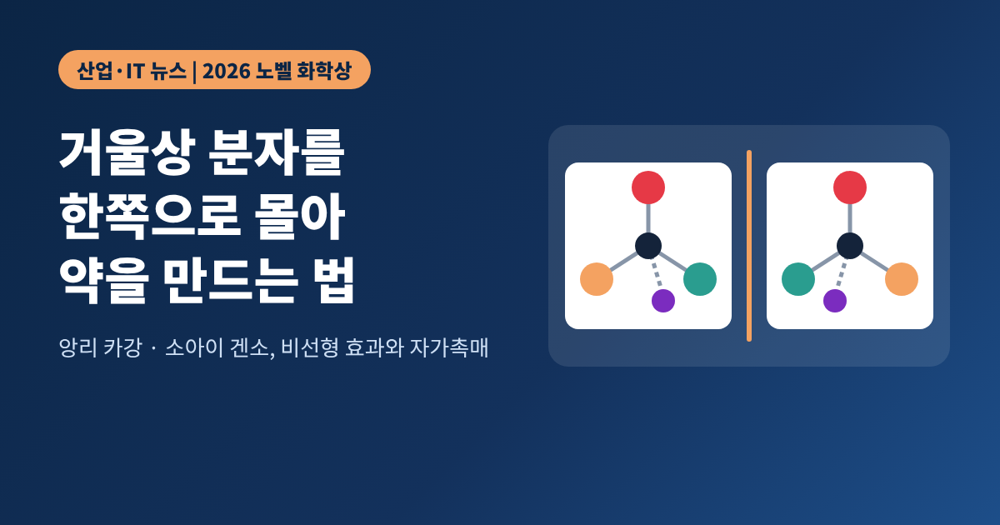
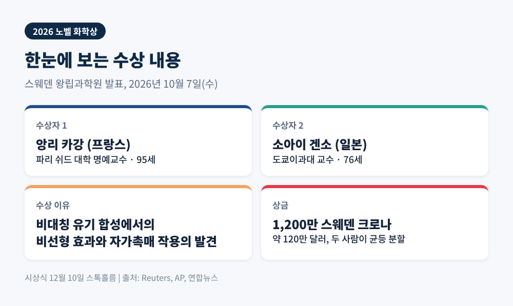
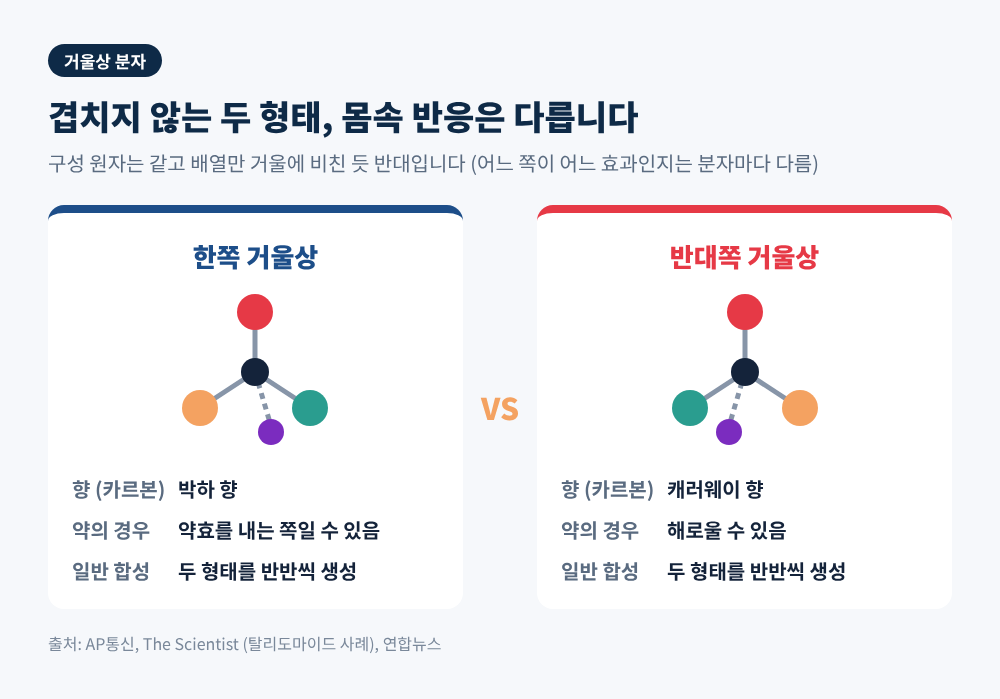
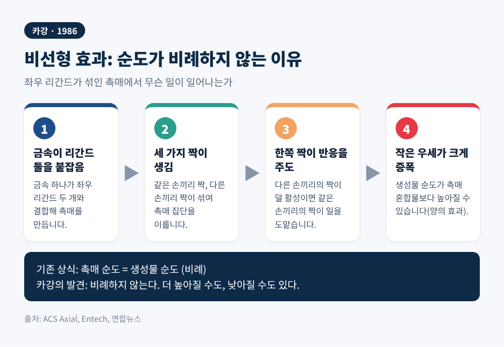
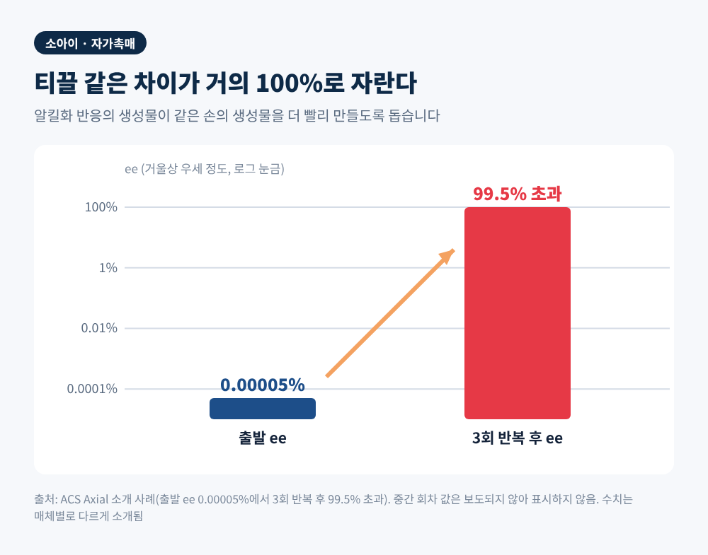
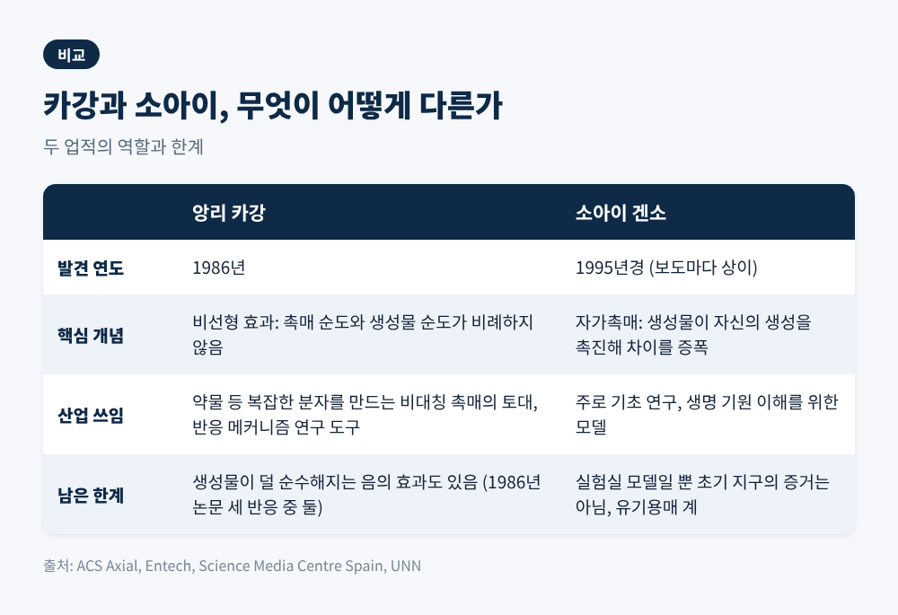

3줄 요약
오늘은 2026년 노벨 화학상이 무엇을 높이 평가했는지 정리해 보려 합니다. 핵심은 거울에 비친 듯 닮은 두 분자 가운데 원하는 쪽만 만드는 원리입니다. 의약품 산업과 생명의 기원, 두 갈래에서 왜 중요한지 차례로 살피겠습니다.
스웨덴 왕립과학원은 2026년 10월 7일(수) 스톡홀름에서 올해 화학상 수상자를 발표했습니다. 프랑스의 앙리 카강과 일본의 소아이 겐소입니다. 상금은 1,200만 스웨덴 크로나(약 120만 달러)이고, 두 사람이 균등하게 나눕니다. 시상식은 12월 10일 스톡홀름에서 열립니다.
공식 수상 이유는 "비대칭 유기 합성에서의 비선형 효과와 자가촉매 작용의 발견"입니다. 카강은 파리 쉬드 대학 명예교수로 보도 기준 95세입니다. 소아이는 도쿄이과대 교수로 76세입니다. 일본은 작년 금속-유기 구조체 연구에 이어 2년 연속으로 화학상 수상자를 냈습니다.
소아이는 소식을 들었을 때 쇼핑 중이었고, 인생에서 가장 설레는 날이라고 말했습니다. 그는 "아직 알려지지 않은 매혹적인 면이 남아 있다"고도 덧붙였습니다. 연구가 끝난 것이 아니라는 뜻입니다.

분자 중에는 왼손과 오른손처럼 서로 겹쳐지지 않는 거울상 쌍이 있습니다. 아미노산이 대표적입니다. 문제는 생명이 이 둘 가운데 한쪽만 쓴다는 점입니다. 사람 단백질의 아미노산은 거의 L형이고, DNA는 오른쪽으로 꼬입니다. 이를 동형 카이랄성이라고 부릅니다.
반면 실험실의 일반 화학반응은 두 거울상을 거의 반반씩 만들어 냅니다. 이 차이가 산업의 골칫거리였습니다. 같은 분자의 두 거울상이 몸에서는 전혀 다르게 작용하기 때문입니다.
AP통신이 든 예는 향입니다. 카르본이라는 분자는 한쪽 거울상이 박하 향이고, 다른 쪽은 캐러웨이 향입니다. 약이라면 문제는 더 무겁습니다. 한쪽은 약효를 내지만 다른 쪽은 해로울 수 있습니다. 과학 전문지 더 사이언티스트는 1960년대 탈리도마이드의 거울상 분자가 수천 명의 아이에게 심각한 기형을 일으켰다고 짚었습니다.
그래서 제약·농약·향료 업계는 원하는 거울상만 만드는 일에 큰 공을 들여 왔습니다. 노벨위원회 위원 페테르 소므파이는 이번 업적이 약 제조 반응을 설계하는 화학자에게 결정적이라고 평가했습니다. 다만 특정 약 하나를 이 연구 덕이라고 꼽기는 어렵다고 했습니다. "도구이자 이해로 쓰이기 때문"이라는 것입니다.

카강이 1986년에 보인 것은 비선형 효과입니다. 그전까지 화학자들은 촉매의 거울상 순도가 높으면 생성물도 그만큼 순수해지고, 낮으면 그만큼 떨어진다고 생각했습니다. 비례한다는 믿음이었습니다.
카강은 이 믿음을 흔들었습니다. 좌우 리간드가 섞인 촉매로도 원료의 순도보다 더 순수한 생성물이 나올 수 있었습니다. 미국화학회(ACS)의 설명에 따르면 원리는 이렇습니다. 금속 하나가 리간드 둘을 붙잡으면 같은 손끼리 짝을 짓거나 다른 손끼리 짝을 짓습니다. 다른 손끼리의 짝이 반응성이 떨어진다면 같은 손끼리의 짝이 반응을 주도하고, 작은 우세가 크게 불어납니다.
반대로 생성물이 촉매보다 덜 순수해지는 음의 비선형 효과도 있습니다. 카강이 1986년 논문에서 다룬 세 반응 가운데 둘은 음, 하나는 양의 효과를 보였다고 합니다. 이 현상은 지금도 반응이 어떻게 일어나는지, 어떤 촉매종이 실제로 일하는지 파헤치는 도구로 쓰입니다.

소아이의 업적은 자가촉매입니다. 반응의 생성물이 같은 생성물을 더 빨리 만들게 돕는 현상입니다. 1953년 물리학자 프레데릭 프랭크가 이런 계에서는 작은 불균형이 큰 우세로 자랄 수 있다고 이론적으로 제안했습니다. 소아이는 1995년경 이를 실제 반응으로 보였습니다.
실험은 피리미딘 알데하이드에 디이소프로필아연을 붙이는 반응입니다. 만들어진 알코올이 같은 손의 알코올을 만들도록 거들며 차이가 회를 거듭할수록 벌어집니다. ACS는 출발 ee(거울상 우세 정도) 0.00005%가 세 번 반복한 뒤 99.5%를 넘은 사례를 소개했습니다. 연합뉴스는 50.0001대 49.9999 같은 미세한 불균형이 증폭되는 모습으로 비유했습니다.
더 놀라운 대목은 2003년의 결과입니다. 거울상을 가르는 입력이 전혀 없는 상태에서 출발해도 한쪽이 압도적으로 우세해지는 계를 보였습니다. 어느 쪽이 이길지는 우연에 맡겨집니다. 한 해설에 따르면 키랄 입력이 없는 37번의 실험에서 18번은 한쪽이, 19번은 다른 쪽이 이겼습니다. 노벨위원회 위원장 하이너 린케는 이를 두고 생명 자신 외에는 이뤄 낸 적 없는 일이라는 취지로 말했습니다.
다만 수치 표기는 보도마다 차이가 있습니다. 증폭 정도와 논문 연도는 매체별로 엇갈려 소개됩니다. 이 글은 ACS와 노벨위원회 발언 중심으로 정리했습니다.

두 업적은 쓰임새가 다릅니다. 카강의 비선형 효과는 복잡한 약물 분자를 만드는 현대 비대칭 촉매의 토대가 되었습니다. 엔테크 등의 해설은 노요리 그룹 실험에서 ee 15%의 리간드가 98% 생성물로 이어진 사례를 소개합니다. 소아이 반응은 반대로 주로 기초 연구입니다. 호모카이랄리티가 어떻게 생겼는지를 설명하는 모델의 성격이 강합니다. 그럼에도 일부 연구진은 이 자가촉매를 이용해 HIV 치료제 에파비렌즈의 핵심 중간체를 만들어 보였다는 보도가 있습니다.
쟁점은 한계에 있습니다. 첫째, 실험실 모델이 초기 지구의 실제 과정을 증명하지는 않습니다. 스페인 연구자 우셰 우리아는 생명의 카이랄성 기원이 여전히 큰 미해결 문제라고 말했습니다. 발라돌리드대의 호세 마리아 안드레스도 이를 증거가 아닌 모델로 선을 그었습니다. 둘째, 소아이 반응은 아연 시약을 쓰는 유기용매 계여서 물속에서 일어난 생명 화학과는 거리가 있다는 평가가 있습니다. 셋째, 프랭크 모델은 여러 설명 중 하나일 뿐입니다.
한국 학계의 평가도 나왔습니다. 최태림 취리히연방공대 교수는 2001년 노벨화학상이 비대칭 촉매 합성에 주어졌고 올해 상은 그 기초 연구를 이어받은 것이라고 설명했습니다. 이상엽 KAIST 특훈교수는 약효 있는 거울상만 골라 만드는 기술에 기여했다고 평가했습니다.
시간도 눈여겨볼 만합니다. 카강의 논문은 1986년, 소아이의 논문은 1995년경입니다. 수상까지 각각 약 40년, 30년 이상이 걸렸습니다. 예전엔 실험실의 신기한 현상이었고, 지금은 약을 설계하는 화학자들이 쓰는 도구와 이해의 일부입니다.

앞으로 볼 지점은 두 가지입니다. 하나는 산업입니다. 비대칭 합성은 이미 약, 농약, 향료, 신소재 분야에서 쓰이는 기술입니다. 이번 수상은 새 제품의 등장을 알리기보다, 이 분야가 기대 온 원리를 공식적으로 인정한 일로 보는 편이 맞겠습니다. 미국화학회 회장 리고베르토 에르난데스는 오늘날의 의약품이 이 화학 없이는 불가능했을 것이라고 평가했습니다.
다른 하나는 기원입니다. 소아이 반응이 보여 준 증폭 원리가 초기 지구의 원시 수프에서도 작동했는지는 답이 없습니다. 어쩌면 확정된 답은 끝내 나오지 않을 수도 있다는 전문가 견해도 있습니다. 소아이 본인의 말처럼 아직 알려지지 않은 면이 남아 있습니다. 당분간은 이 두 질문이 이 분야를 이끌 것으로 보입니다.
정리하면 이렇습니다. 올해 노벨 화학상은 거울상 분자를 한쪽으로 몰아가는 두 가지 원리, 곧 순도가 비례하지 않을 수 있다는 점과 생성물이 스스로 차이를 키운다는 점에 주어졌습니다.
"작은 차이가 어떻게 한쪽 세계를 만드는가." 이 질문 앞에서 산업은 이미 답을 도구로 쓰고 있고, 과학은 아직 답을 찾는 중입니다.
다음에 약 한 알을 드실 일이 있다면, 그 안의 분자가 어느 쪽 손인지를 누군가 골라 만들었다는 사실을 떠올려 보시길 권합니다.
출처: Reuters(Khaleej Times), AP(Al Jazeera·NPR/KUNC), 연합뉴스, 헤럴드K, 미국화학회(ACS Axial), The Scientist, Science Media Centre Spain, Entech, UNN 등 2026년 10월 7~8일 보도